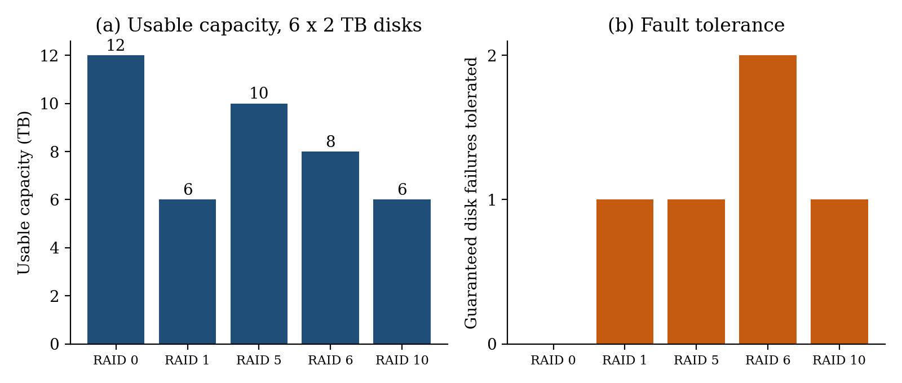
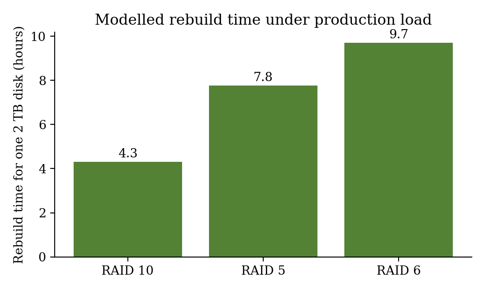
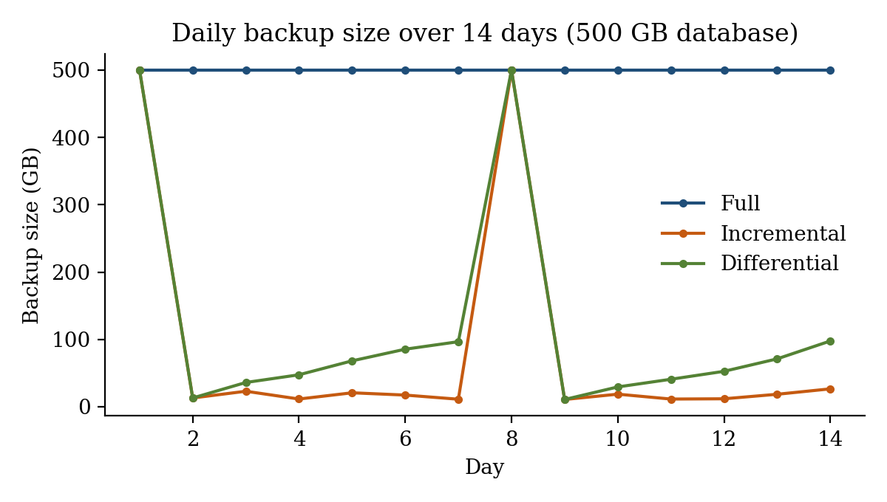
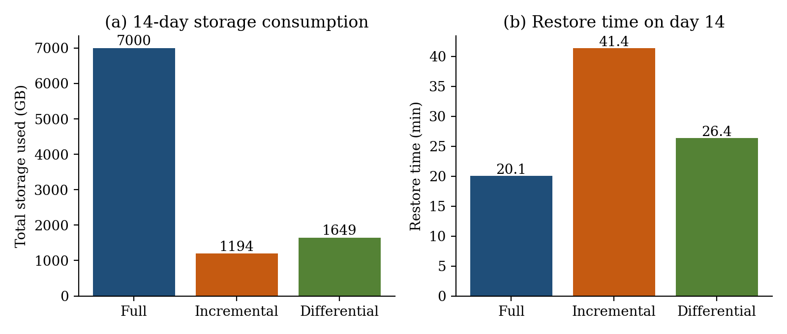

Layer 1: Intelligent RAID Storage Array Simulator
Evaluate usable capacity, disk failure tolerance, and reconstructive rebuild times on six 2 TB enterprise drives (12 TB Raw).
Enterprise Storage Bay Chassis (6-Bay Tray)
HEALTHY / ONLINEClick any disk to physically fail it, or observe rebuild mechanics. In RAID 5, 1 failure is recoverable; a 2nd simultaneous failure destroys the array. In RAID 6, 2 simultaneous failures are safely tolerated!
Stripe & Parity Distribution across Array (First 6 Stripes)
Left-Symmetric rotating parity prevents dedicated parity disk bottleneck| Stripe ID | Disk 0 | Disk 1 | Disk 2 | Disk 3 | Disk 4 | Disk 5 |
|---|
Rebuild Exposure Window & Production Load Analysis
During an array rebuild, clinical hospital read/write transactions compete with rebuild I/O. As disk size reaches 2 TB, long rebuild times dramatically heighten the probability of a fatal Unrecoverable Read Error (URE) or secondary drive collapse.
Live Calculated Rebuild Duration (2 TB Disk)
Mathematical Verification: Bit-Exact XOR Parity Engine
Direct demonstration of Algorithm 1 & Algorithm 2 from Chapter 4. Experience how Exclusive-OR ($\oplus$) enables exact reconstruction without hardware duplication.
1. Data Striping & Parity Generation
Enter sample clinical text or generate random hospital patient data chunks to distribute across 4 data drives and compute Parity on the 5th drive.
2. Disaster Emulation & Bit-Exact Restoration
Select one drive to destroy. All bits on that drive become $0$. Then trigger the XOR reconstruction algorithm to prove bit-exact recovery.
Double Drive Crash Stress Test (RAID 5 Limit)
Simulate crashing Disk 0 AND Disk 1 simultaneously:
Full-Scale Python Simulation Benchmark (256 Stripes × 4 KiB = 1 MiB/Disk)
Real results produced by our Python benchmark (Appendix A / Chapter 5.1.1):
| Test Case | Target Disk | Reconstruction Formula | SHA-256 Checksum Match | Rebuild Time | Result |
|---|---|---|---|---|---|
| Single Failure Test 1 | Disk 0 | D0 = D1 ⊕ D2 ⊕ D3 ⊕ D4 ⊕ P |
100% BIT-EXACT MATCH | 5.17 ms | PASSED ✓ |
| Single Failure Test 2 | Disk 1 | D1 = D0 ⊕ D2 ⊕ D3 ⊕ D4 ⊕ P |
100% BIT-EXACT MATCH | 6.42 ms | PASSED ✓ |
| Single Failure Test 3 | Disk 2 | D2 = D0 ⊕ D1 ⊕ D3 ⊕ D4 ⊕ P |
100% BIT-EXACT MATCH | 5.79 ms | PASSED ✓ |
| Single Failure Test 4 | Disk 3 | D3 = D0 ⊕ D1 ⊕ D2 ⊕ D4 ⊕ P |
100% BIT-EXACT MATCH | 5.35 ms | PASSED ✓ |
| Single Failure Test 5 | Disk 4 | D4 = D0 ⊕ D1 ⊕ D2 ⊕ D3 ⊕ P |
100% BIT-EXACT MATCH | 7.06 ms | PASSED ✓ |
| Simultaneous Double Failure | Disk 0 & Disk 1 | D0 ⊕ D1 = Acc (Two Unknowns) |
CORRUPT / MISMATCH | -- | UNRECOVERABLE ✗ |
Layer 2: 14-Day Backup Cycle & Disaster Recovery Simulator
Evaluate storage consumption, daily backup windows, and restore times for a 500 GB Hospital EMR Database across Full, Incremental, and Differential backup policies.
14-Day Backup Progression (Weekly Full on Days 1 & 8)
Click any day on the timeline or slider to inspect clinical data change rates and backup size.
🚨 Hospital Disaster Recovery Drill: EMR Database Crash
Simulate catastrophic volume corruption or ransomware encryption on Day 14. Mount required backup sets and measure recovery time against the 1-Hour RTO.
Click "Trigger EMR Disaster on Day 14" to execute the full disaster recovery drill.
Hospital Information System Architecture & Business Impact Analysis
Based on Section 3.2, 3.3, and Figure 3.1: Workload tiering, SLA boundaries, and complementary protection layers.
Proposed Two-Layer Hospital Storage Protection Architecture
Architecture overview: Primary intelligent storage array with tier-tailored RAID levels backed by automated hot spares, complemented by a local disk staging backup pool and offsite/cloud disaster recovery.
Table 3.1: Hospital Workload Tiers & Service Levels
| Tier | Workload | Clinical Impact | RTO | RPO |
|---|---|---|---|---|
| Tier 1 | EMR / HIS Database (500 GB) | Critical patient-safety hazard; loss of medication / allergy charts | 1 Hour | 24 Hours |
| Tier 2 | PACS Radiology Archive | Delayed diagnostics, ICU surgical imaging backlog | 4 Hours | 24 Hours |
| Tier 3 | Hospital Admin & Billing | Administrative/cashflow delay; zero patient danger | 24 Hours | 24 Hours |
Core Concept: Why RAID is NOT a Replacement for Backup
A common misconception in storage infrastructure is that RAID eliminates the need for backups. This table illustrates why both layers are indispensable:
| Failure Event | Protected by RAID? | Protected by Backup? |
|---|---|---|
| Single Physical Disk Crash | ✓ YES (Array keeps running) | Unnecessary (Hardware survives) |
| Ransomware Encryption / Malware | ✗ NO (Replicates bad data) | ✓ YES (Restore clean snapshot) |
| Accidental Patient Record Deletion | ✗ NO (Immediate parity write) | ✓ YES (Rollback to yesterday) |
| Data Center Flood / Fire / Outage | ✗ NO (All disks destroyed) | ✓ YES (Offsite / Cloud DR) |
Chapter 5: Quantitative Findings & Published Research Charts
Reproducing Table 5.1, Table 5.2, and Figures 5.1 through 5.4 directly from the case study experiment.
Figure 5.1: Usable Capacity & Fault Tolerance (6 × 2 TB Disks)

RAID 0 offers 12 TB (0% redundancy); RAID 6 offers 8 TB with 2-disk fault tolerance.
Figure 5.2: Modelled Rebuild Time under Hospital Production Load

RAID 10 rebuilds fastest (4.3h) by direct mirroring; RAID 6 takes 9.7h due to dual parity XOR/GF operations.
Figure 5.3: Daily Backup Size over 14 Days (500 GB Database)

Incremental backup transfers only 10-25 GB/day; Differential slowly accumulates until weekly reset on Day 8.
Figure 5.4: 14-Day Storage Consumption vs Day-14 Restore Time

Differential backup achieves the optimal trade-off: 76% storage savings and rapid 26.4 min recovery time.
Table 5.1: RAID Levels on Six 2 TB Disks (12 TB Raw)
| RAID Level | Usable (TB) | Overhead | Fault Tolerance | Rebuild Time |
|---|---|---|---|---|
| RAID 0 | 12.0 TB | 0% | 0 Disks | Unrecoverable |
| RAID 1 | 6.0 TB | 50% | 1 Disk | Not modelled |
| RAID 5 | 10.0 TB | 16.7% | 1 Disk | 7.8 Hours |
| RAID 6 | 8.0 TB | 33.3% | 2 Disks | 9.7 Hours |
| RAID 10 | 6.0 TB | 50.0% | 1 Guaranteed | 4.3 Hours |
Table 5.2: Backup Strategies over 14 Days (500 GB EMR DB)
| Strategy | Total Storage | Savings | Avg Backup | Restore Sets | Restore Time |
|---|---|---|---|---|---|
| Daily Full | 7,000 GB | -- | 21.3 min | 1 Set | 20.1 min |
| Full + Incremental | 1,194 GB | 83% | 3.6 min | 7 Sets | 41.4 min |
| Full + Differential | 1,649 GB | 76% | 5.0 min | 2 Sets | 26.4 min |
21CSE359T Course Viva & Oral Exam Assistant
Key theoretical explanations, mathematical justifications, and potential examiner questions with exact textbook answers.
Q1. Why does RAID 5 suffer from the "Small Write Penalty" (2 Reads + 2 Writes)?
When writing a block $D_{\text{new}}$ smaller than a full stripe, the RAID controller cannot calculate new parity without knowing all other data blocks. Instead of reading all $N-2$ other disks, it uses the differential parity equation:
This requires 4 total I/O operations: (1) Read $D_{\text{old}}$, (2) Read $P_{\text{old}}$, (3) Write $D_{\text{new}}$, (4) Write $P_{\text{new}}$. This penalty severely throttles random transaction databases, which is why RAID 10 was chosen for the EMR database.
Q2. Why is RAID 10 rebuild time (4.3h) faster than RAID 5 (7.8h) and RAID 6 (9.7h)?
In RAID 10, reconstruction of a failed disk is a pure 1-to-1 sequential disk copy from its mirrored partner. No parity calculations or reading from all other array disks are required. Consequently, 90% of available disk bandwidth is directed to copying.
In contrast, RAID 5 must read every sector of every surviving disk and compute XOR parity in memory before writing to the replacement disk. In a 300-bed hospital under production load, clinical I/O restricts available rebuild bandwidth to only 40%–50%.
Q3. What is an Unrecoverable Read Error (URE) and why does it make RAID 5 dangerous?
Consumer and standard enterprise SATA drives have an URE specification of 1 bit error per $10^{14}$ bits read ($~12.5\text{ TB}$). During a RAID 5 rebuild of a 2 TB disk across 5 disks, the array must read $4 \times 2\text{ TB} = 8\text{ TB}$ of data continuously. The statistical probability of hitting an unreadable sector during rebuild is significant. If an URE occurs in RAID 5 while degraded, the rebuild halts and the array is destroyed. RAID 6 solves this by maintaining two independent parity syndromes ($P$ and $Q$).
Q4. What is the fundamental difference between RTO and RPO?
- RTO (Recovery Time Objective): The maximum acceptable duration of system downtime before clinical disaster ensues. For Tier 1 EMR, RTO is 1 hour.
- RPO (Recovery Point Objective): The maximum allowable age of data that can be permanently lost when disaster strikes. With daily backups at midnight, RPO is 24 hours.
Q5. Why did the hospital choose Full + Differential over Full + Incremental?
While Incremental backup used slightly less total storage (1,194 GB vs 1,649 GB), restoring Day 14 under Incremental required 7 separate backup sets (the Day 8 Full + 6 daily increments), resulting in 41.4 minutes of restore time due to catalog search and tape mount overheads (3 min per set).
Differential backup requires only 2 sets (Day 8 Full + Day 14 Diff), restoring in 26.4 minutes (a 36% faster restore), providing a huge 33.6-minute safety cushion under the 1-hour RTO SLA, and eliminating the vulnerability where a corruption in any intermediate day renders all subsequent backups unreadable.
Q6. How does India's Digital Personal Data Protection (DPDP) Act, 2023 apply to this case?
As a Data Fiduciary processing sensitive personal and medical data of hospital patients, the hospital is legally mandated under Section 8 of the DPDP Act 2023 to protect data against unauthorized disclosure, loss, or destruction by implementing reasonable security safeguards. A resilient two-layer architecture (RAID + offsite backups + quarterly drills) provides documented evidence of compliance.